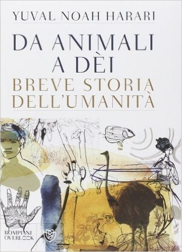
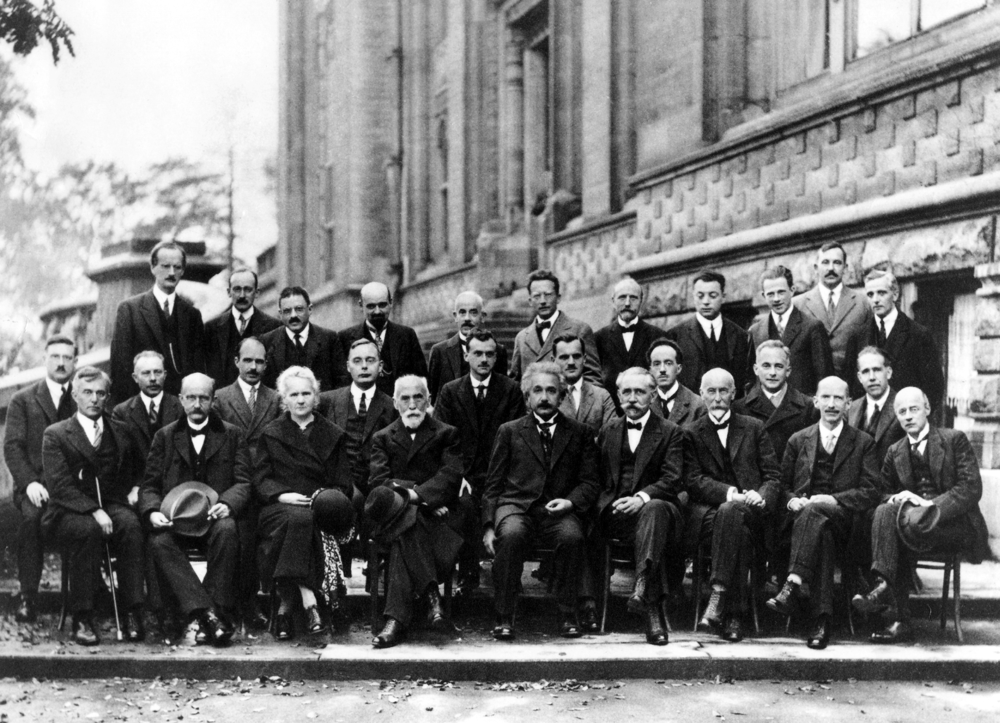
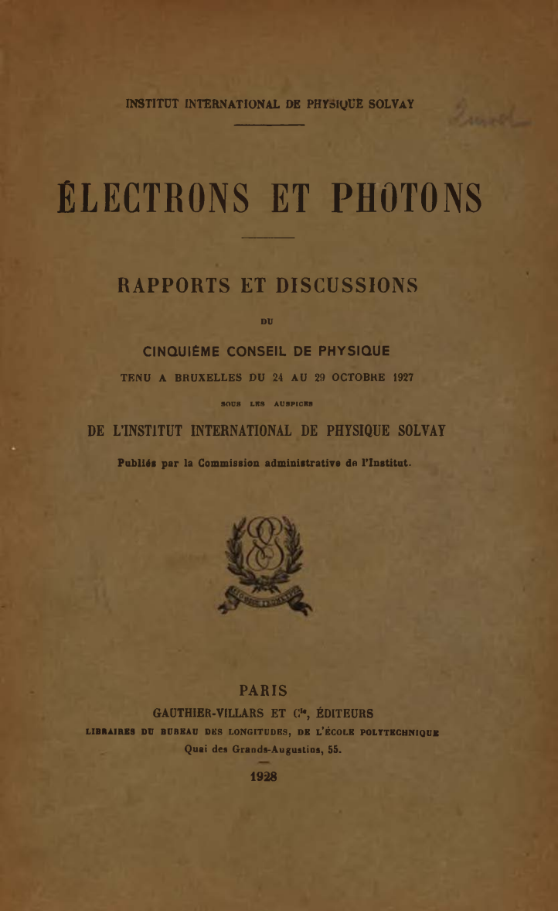
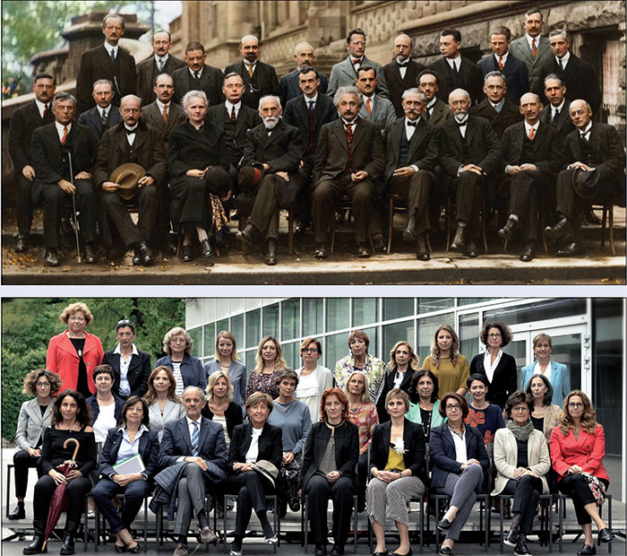

1:04:35 · 10 OPERE
L'accademia impazzita.
Il filo del discorso
Il relatore propone una critica dell’università e del circuito culturale che riconosce autorità a docenti, divulgatori e figure politiche. La sua tesi è che titoli e incarichi possano diventare sostituti della capacità di ragionare e favorire l’adattamento alle idee dominanti. Il titolo del contributo è una formula polemica: la scheda non ne ricava diagnosi cliniche e non considera volti, abiti o appartenenza a un gruppo come prove della qualità intellettuale. La prima parte raccoglie casi molto diversi: uno stile spettacolare di insegnamento della fisica, dichiarazioni controverse sugli anziani, un tweet di una docente di Cambridge e commenti su mascherine e guerra. Il relatore li legge come manifestazioni di una crisi comune. Le note distinguono però ciò che una fonte permette di stabilire dalle interpretazioni che vi vengono aggiunte. Una proposta descritta come metaforica non è automaticamente un programma letterale; il significato spiegato dall’autrice di un tweet non coincide necessariamente con la lettura avversaria; una coincidenza di data non dimostra un’identità politica con il passato nazista. Idiocracy introduce il confronto con una società immaginaria incapace di riconoscere le competenze. Il relatore richiama poi La società del contrario e un proprio testo sulla vita accademica, probabilmente The Empty Campus. La parte bibliografica più estesa riguarda l’edizione del settantacinquesimo anniversario di Dialettica dell’illuminismo e la prefazione di Eva von Redecker. La critica si concentra su tono, riferimenti e apparato. La scheda separa il dissenso interpretativo dalla verifica di singole affermazioni e non trasforma miti antisemiti discussi nel passaggio in fatti storici. Una frase di Harari sulla coerenza, riconducibile probabilmente a Sapiens, apre il problema del rapporto fra contraddizione e pensiero. Seguono incarichi accademici di figure politiche, accuse di favoritismo e una polemica su Galimberti. I riscontri confermano alcuni elementi circoscritti, come l’incarico temporaneo di Joschka Fischer a Princeton, mentre non consentono di certificare condanne, motivazioni delle nomine o titoli dei volumi di Altieri mostrati. Il richiamo a Il maestro e Margherita appartiene invece chiaramente al percorso letterario. L’ultima parte investe la divulgazione scientifica e la comunicazione della pandemia. Alcune affermazioni del relatore richiedono correzioni esplicite: plutonio e uranio sono elementi differenti; la classificazione di Plutone non dipende soltanto dalla massa; il confronto fra mascherine e tute da laboratorio non basta a stabilire l’efficacia di una protezione. La revisione delle conoscenze viene distinta dall’idea che ogni posizione sia equivalente. Il confronto conclusivo fra la fotografia Solvay del 1927 e quella di Trento del 2017 riporta il tema al riconoscimento del merito. Le immagini e gli atti del congresso vengono documentati come opere diverse, senza usare la composizione del gruppo come misura della qualità delle ricerche.
I libri nel discorso

Idiocracy
Immagine promozionale del film · distribuzione digitale: Film statunitense del 2006, regia di Mike Judge, con Luke Wilson e Maya Rudolph, distribuito da 20th Century Fox. Immagine promozionale autentica della distribuzione digitale; non una copertina libraria. La scheda statunitense distingue il 2006 di uscita dal copyright grafico del 2005.
Grafica ufficiale con il titolo Idiocracy e il cast, vista integralmente nella scheda Apple TV. Non è una prova delle tesi sociologiche del relatore.
Titolo Idiocracy e trama della sospensione del protagonista riconoscibili. Il nome nella trascrizione automatica dell’attore viene corretto in Luke Wilson e il salto temporale in cinquecento anni, senza adottare la lettura del film come misura dell’intelligenza sociale.
Passaggio 14:02 ↗ · Fonti e libro ↗
La società del contrario
Copertina: Zambon · 2005
Copertina autentica dell’edizione di riferimento, controllata visivamente. Non identifica l’esemplare letto o citato nel video.
Il relatore nomina il proprio libro del 2005 La società del contrario e ne legge il sottotitolo sulla cultura di massa e i suoi intellettuali.
Passaggio 17:26 ↗ · Fonti e libro ↗
The Empty Campus
Identificazione probabile
Copertina: Lulu · edizione inglese di riferimento
Immagine associata all’ISBN di riferimento e controllata visivamente; edizione e traduzione non identificate come quelle citate o lette nel video.
Il relatore indica un proprio testo del 2016 sulla trasformazione universitaria, senza titolo leggibile nel parlato. Corrispondenza probabile con The Empty Campus; anno e copia non dichiarati certi.
Passaggio 18:17 ↗ · Fonti e libro ↗
Dialettica dell’illuminismo
Copertina: Einaudi, Piccola Biblioteca Einaudi, 2010
Edizione illustrativa dell'opera, con traduzione di Renato Solmi e introduzione di Carlo Galli; non identificata nel video.
Dialettica dell’illuminismo, Horkheimer e Adorno, edizione Fischer per il 75º anniversario sono espliciti.
Passaggio 22:55 ↗ · Fonti e libro ↗
Prefazione all’edizione del 75ºanniversario di Dialektik der Aufklärung
Volume contenente la prefazione di Eva von Redecker: S. Fischer · Jubiläumsausgabe ·2022 · volume contenente la prefazione
Immagine ufficiale dell’intero volume di Horkheimer e Adorno che contiene la prefazione di Eva von Redecker. Non è una copertina autonoma della prefazione. Edizione identificata dai dati editoriali discussi, senza confronto del fotogramma.
Eva von Redecker e la nuova introduzione/prefazione all’edizione Fischer 2022 sono il centro della critica. Il contributo è distinto dall’opera di Horkheimer e Adorno.
Passaggio 23:20 ↗ · Fonti e libro ↗
Sapiens. A Brief History of Humankind (Da animali a dèi. Breve storia dell’umanità)
Identificazione probabile
Copertina: Bompiani Overlook · Da animali a dèi · copertina italiana dal sito dell’autore
Copertina autentica italiana dell’opera nota come Sapiens. Non identificati anno della ristampa o ISBN della copia nel video. Non confusa con Homo Deus, Nexus o 21 lezioni.
Harari e la frase inglese Consistency is the playground of dull minds identificano probabilmente Sapiens tramite riscontri istituzionali; il titolo non è pronunciato e non viene dedotto dal solo nome dell’autore.
Passaggio 29:14 ↗ · Fonti e libro ↗
Il maestro e Margherita
Copertina: BUR / Rizzoli · 2018
Immagine autentica dell’opera, controllata visivamente; l’edizione di riferimento non è attribuita al filmato.
Il maestro e Margherita e il personaggio Woland vengono nominati nel paragone polemico con Wieler. Somiglianze fisiche non provano carattere o competenza.
Passaggio 40:36 ↗ · Fonti e libro ↗
Fotografia di gruppo del quinto congresso Solvay (Bruxelles, 1927)
Fotografia di gruppo del congresso Solvay del 1927: Bruxelles · quinto congresso Solvay · ottobre 1927 · fotografia di Benjamin Couprie
Riproduzione fotografica autentica del gruppo, acquisita da Wikimedia Commons e confrontata con il catalogo istituzionale. Non è la copertina degli atti. La scheda IAS indica diritti non conclusivamente determinati (In C-RUU); la fonte non attesta una licenza libera o il pubblico dominio.
Il relatore mostra e descrive la fotografia del congresso Solvay 1927, identificando vari partecipanti. Catalogo IAS EB188 conferma fotografo e gruppo.
Passaggio 59:04 ↗ · Fonti e libro ↗
Électrons et photons. Rapports et discussions du cinquième Conseil de physique tenu à Bruxelles du 24 au 29 octobre 1927
Identificazione probabile
Copertina originale degli atti Solvay pubblicati nel 1928: Paris · Gauthier-Villars · 1928 · atti del congresso 24–29 ottobre 1927
Copertina dalla pagina 2 della copia istituzionale di 307 pagine. Data del congresso e anno di pubblicazione sono distinti. Non si tratta di un frontespizio sostitutivo.
Il risultato del congresso su elettroni e fotoni è indicato nel contesto della fotografia. Gli atti originali Électrons et photons (1928) sono riscontrati nel PDF Solvay/ULB; senza lettura integrale del titolo, identificazione probabile.
Passaggio 1:01:00 ↗ · Fonti e libro ↗
Solvay 1927–Trento 2017: la fisica e le donne (fotografia di gruppo)
Tavola CERN: Solvay 1927 in alto, fotografia Trento 2017 di Cavulli in basso: Trento · 14 settembre 2017 · tavola comparativa pubblicata dal CERN il 15 gennaio 2018
Immagine autentica pubblicata dal CERN: non è solo lo scatto di Cavulli ma una tavola con Solvay 1927 in alto, colorizzato da Sanna Dullaway, e Trento 2017 in basso, foto Giovanni Cavulli/Università di Trento. L’anno 2018 è della pubblicazione CERN; non si attribuisce a Cavulli la foto storica o la sua colorizzazione.
Foto di Trento con 28 scienziate e un uomo contrapposta al gruppo del 1927. Progetto identificato mediante il comunicato UniTrento e la tavola CERN; corretta la data dello scatto al 14 settembre 2017.
Passaggio 1:01:27 ↗ · Fonti e libro ↗